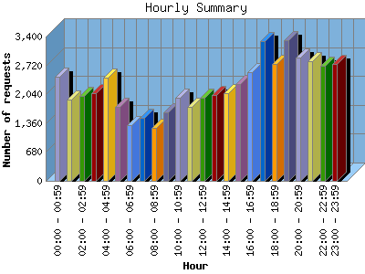

NPS Internet Solutions, Inc.
NPS Internet Solutions, Inc.
The Hourly Summary identifies the level of activity broken down by each hour. Remember that one page hit can result in several server requests as the images for each page are loaded. This summary also compares the level of activity during working hours and after hours as a total for the report time frame.

| Hour | Number of requests | Number of page requests | Number of bytes transferred | |
|---|---|---|---|---|
| 1. | 00:00 - 00:59 | 2,448 | 372 | 288.127 MB |
| 2. | 01:00 - 01:59 | 1,915 | 233 | 210.635 MB |
| 3. | 02:00 - 02:59 | 2,006 | 199 | 249.187 MB |
| 4. | 03:00 - 03:59 | 2,076 | 185 | 262.788 MB |
| 5. | 04:00 - 04:59 | 2,425 | 257 | 261.354 MB |
| 6. | 05:00 - 05:59 | 1,745 | 161 | 201.214 MB |
| 7. | 06:00 - 06:59 | 1,308 | 111 | 167.893 MB |
| 8. | 07:00 - 07:59 | 1,493 | 153 | 181.708 MB |
| 9. | 08:00 - 08:59 | 1,250 | 130 | 140.352 MB |
| 10. | 09:00 - 09:59 | 1,616 | 147 | 180.011 MB |
| 11. | 10:00 - 10:59 | 1,950 | 174 | 259.250 MB |
| 12. | 11:00 - 11:59 | 1,740 | 163 | 217.294 MB |
| 13. | 12:00 - 12:59 | 1,954 | 177 | 245.201 MB |
| 14. | 13:00 - 13:59 | 2,023 | 196 | 234.682 MB |
| 15. | 14:00 - 14:59 | 2,066 | 188 | 253.378 MB |
| 16. | 15:00 - 15:59 | 2,284 | 254 | 254.171 MB |
| 17. | 16:00 - 16:59 | 2,559 | 253 | 330.245 MB |
| 18. | 17:00 - 17:59 | 3,291 | 288 | 492.466 MB |
| 19. | 18:00 - 18:59 | 2,746 | 279 | 368.697 MB |
| 20. | 19:00 - 19:59 | 3,313 | 286 | 432.698 MB |
| 21. | 20:00 - 20:59 | 2,901 | 295 | 337.039 MB |
| 22. | 21:00 - 21:59 | 2,821 | 343 | 302.827 MB |
| 23. | 22:00 - 22:59 | 2,710 | 237 | 332.420 MB |
| 24. | 23:00 - 23:59 | 2,750 | 255 | 341.011 MB |
| Work Hours (8:00am-4:59pm) | 17,442 | 1,682 | 2.065 GB | |
| After Hours (5:00pm-7:59am) | 35,948 | 3,654 | 4.326 GB | |
This report was generated on August 16, 2004 03:59.
Report time frame December 30, 2003 01:23 to August 16, 2004 09:47.
| Web statistics report powered by: | |
|
NPS Internet Solutions, Inc.
|
|
| Web statistics report produced by: analog 5.32 / Report Magic 2.21 |